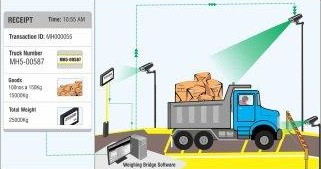

First Weight (Gross Weight)
This is the weight of the truck while fully loaded with goods or
materials. It includes the total mass of the vehicle, cargo, fuel,
and any accessories. Recorded as the truck enters the weighbridge
before unloading, this weight is used in logistics to determine
total load carried and for compliance.

Second Weight (Gross Weight)
This is the weight of the truck after all goods or materials have
been unloaded. It includes only the mass of the empty vehicle, its
fuel, and fixed equipment. Taken after the truck leaves the
unloading area, this weight is subtracted from the gross weight to
determine the net weight of the transported cargo.